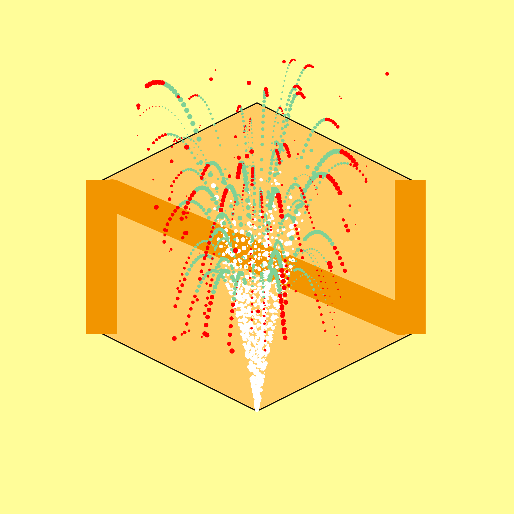

Sketch 19
What I made with p5 -- Day 19!

var of;
function setup() {
createCanvas(1000, 1000);
background(255, 253, 153);
var t =
{
name: "test",
colors: [[255],[128, 209, 149],"red"],
lifetime: 500,
angle: [260,280],
size: [2,10],
speed: 3,
speedx: 0.7,
rate: [40,0.1,200,10],
x: 0.5,
y: 0.8
};
of = new Fountain(null, t);
}
function draw() {
background(255, 253, 153);
push();
fill(255, 204, 100);
stroke(0);
hexagon(500, 500, 300, 2);
pop();
push();
stroke(242, 149, 0);
strokeWeight(60);
line(218, 379, 780, 622);
pop();
of.Draw();
of.CreateN();
of.Step();
noStroke();
stroke(0);
push();
noStroke();
fill(242, 149, 0);
rect(198, 500, 60, 300);
noStroke();
fill(242, 149, 0);
rect(798, 500, 60, 300);
pop();
}
BACK TO MENU